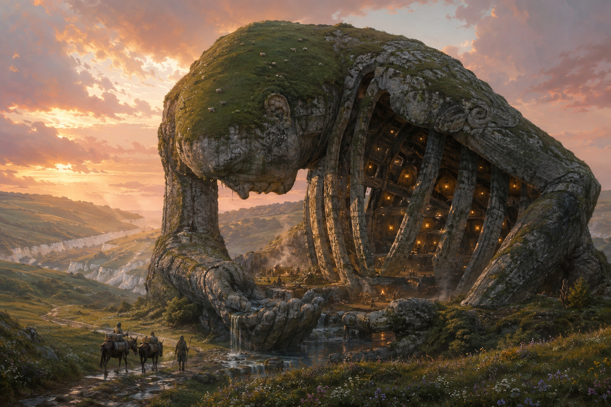
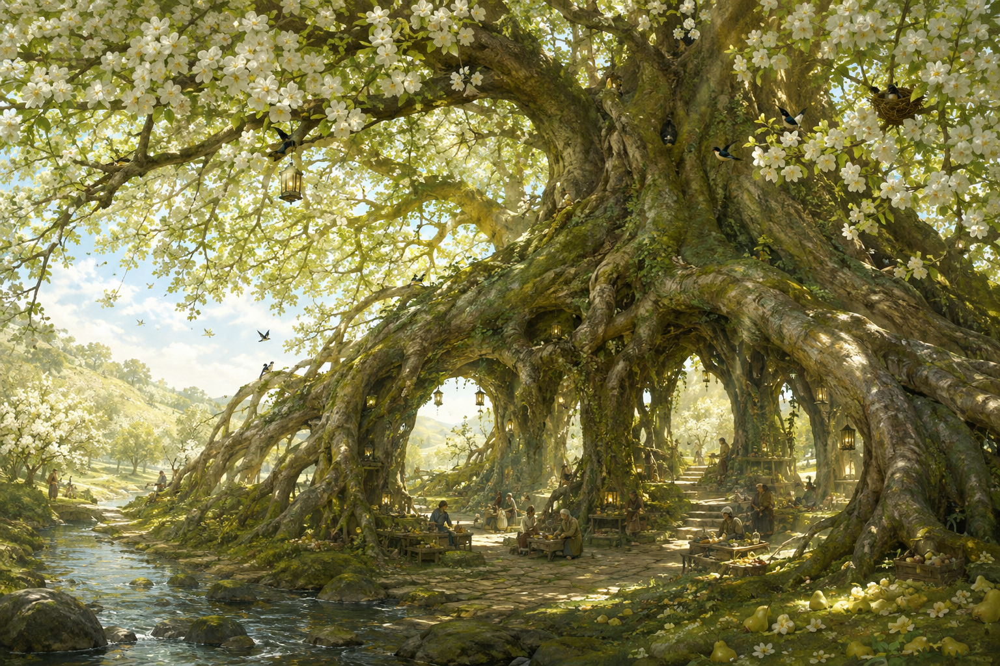
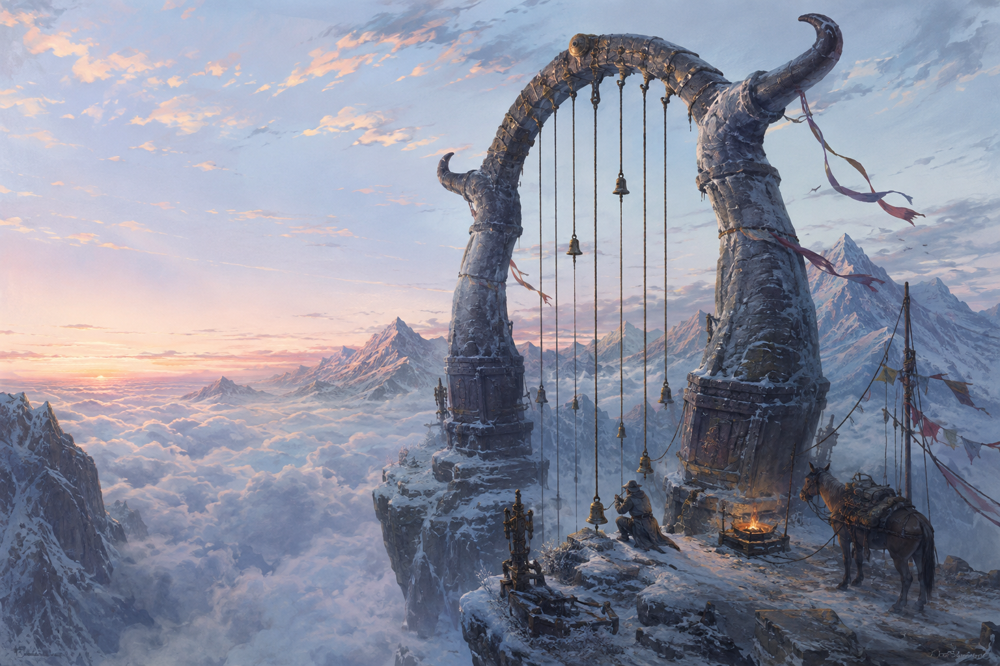
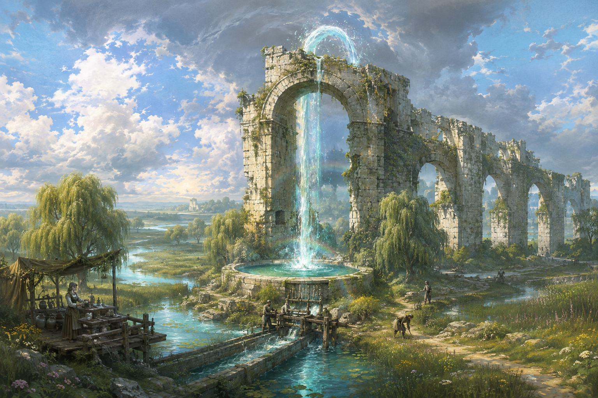
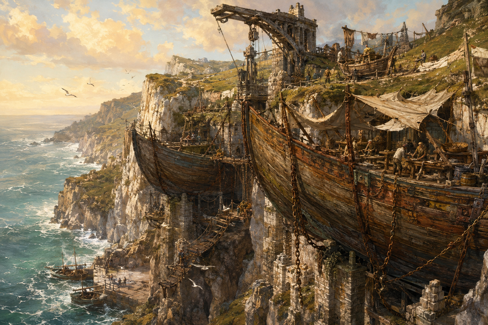
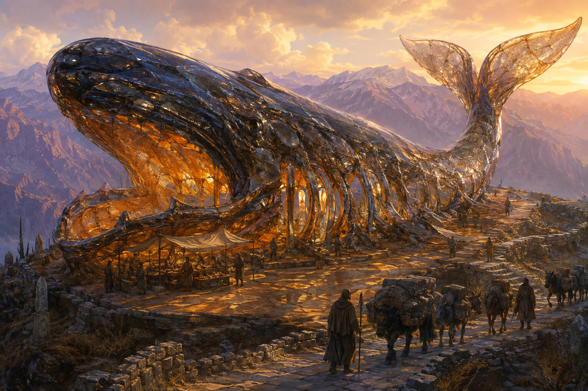
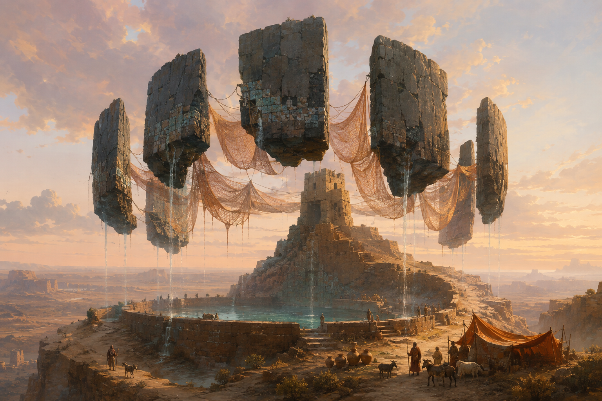
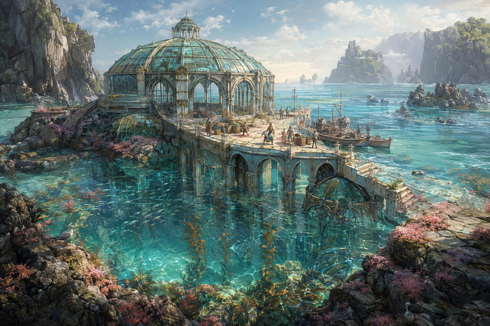
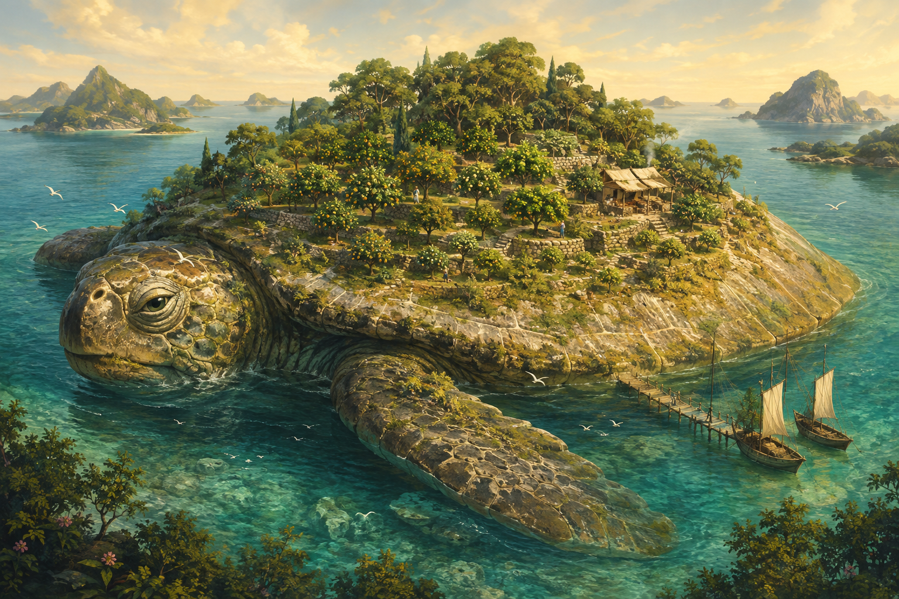

01 / Chalklands
Lanternback Colossus

A hill-sized, kneeling stone figure shelters a spring and communal hearths inside its broken rib vault. Sheep graze on its bowed head; amber lanterns mark the safe shelters below. Its makers and original purpose remain uncertain. Shepherds maintain the approach, while travellers exchange fuel, gossip and repair work for a place by the fire. The lanterns visible today are maintained lights, not an inexhaustible ancient enchantment.
Memory & everyday life
The colossus belongs to the same chalk country as the Button Hills granaries. People connect its open hearths with the Winter of Borrowed Hearths, but no surviving account proves that Maelin Rusk herself came here. A bowl is still set out for an absent guest. The dwarf mason Tessa Flintrill has returned every eleventh spring for almost a century; she recognises several families by their repaired cooking pots before she recognises their faces.
A visitor may hang one lantern for someone who helped them, but the keeper lends the lantern rather than selling ownership of a rib. The last bowl of stew goes to whoever has arrived most recently. Climbing the head is forbidden during lambing, and the deep crawlspaces beneath the spring are outside the open shelter.
Threads through Caldris
The Winter of Borrowed Hearths · The War of False Weights
Explore Chalklands on the atlas →Ways to arrive
- The White Lamb Downs · 70 minutes on foot
The shepherds' chalk path reaches the open rib shelter and ends there; it does not enter the buried chambers.
- Wetherfold Common · 100 minutes on foot
The southern grazing track approaches the spring hand. Livestock and nesting seasons can require local detours.
Its history
- About 1,880 years ago
The Hearths Inside the Stone Ribs
The first surviving communal repair account for the colossus records a roof built within its already ancient torso. Chalkland households invoked the older Borrowed Hearths tradition to protect three open hearths from enclosure. The account documents a reuse of the monument, not its carving or an unbroken institution since the first famine.
- About 432 years ago
The Lanterns Lent Instead of Sold
After competing families began fencing off individual ribs as memorial chapels, shepherds and travelling cooks agreed that memorial lanterns would remain communal property. Several existing plaques were retained with disputed names visible. The agreement secured access to the shelter without settling every claim about who had funded it.
- About 44 years ago
The Colossus Receives a New Left Hand
Tessa Flintrill's repair team stabilised the spring-bearing hand with a visible patch of younger stone. A proposed heroic dedication was replaced by a list of cooks, quarry workers and lenders of carts. The repaired hand now shelters the visitors' water jars.
02 / Orchard March
Crownroot Cathedral

An immense living pear tree raises a vaulted courtyard between its exposed roots. Blossom shades grafting benches, modest stalls and a shared kitchen. The name cathedral describes its shape: no single temple owns it. A narrow strip of fallen fruit remains for birds and small animals, while careful coppicing keeps the working spaces light. The oldest trunk is hollow, but younger living columns continue to grow around it.
Memory & everyday life
Crownroot is a later daughter sanctuary of the Orchard Compact associated with Harth, not the original compact's birthplace. Successive grafts, living root columns and repeated soil work explain much of its size; small sheltering spells supplement that labour. The Guest Beneath the Boughs has been offered a place here on several occasions, but a vast canopy is not proof that the Guest protects every nearby field. The human grafter Oswin Pell keeps an empty seat for his former elven teacher, who last visited thirty-seven years ago.
The first ripe fruit is shared after a meal rather than auctioned. A graft must be accompanied by the name of the person who tended its parent tree. Sellers rent tables by the day; they cannot purchase a permanent root alcove. No pilgrimage fee buys a promise of frost protection.
Threads through Caldris
The Orchard Compact · The Orchard that Counted Birds
Explore Orchard March on the atlas →Its history
- About 1,810 years ago
The First Grafts of Crownroot
Orchard households planted a shared pear sanctuary using several regional scions and a remembered form of the Harth compact. The planting register distinguished donated trees from promises of magical shelter. The young sanctuary supplied grafts and meeting space, not a second limitless version of the Guest's protection.
- About 722 years ago
The Court Beneath the Living Roots
Storm damage and erosion exposed great supporting roots. Gardeners chose to brace the living tree and establish a sunken courtyard instead of filling the ground again. Several institutions helped pay for it; their failure to agree on sole ownership left the courtyard available to a shared kitchen.
- About 27 years ago
Crownroot Keeps Its Bird Strip
During the recent orchard debates over counting birds and ordinary growing conditions, Crownroot's gardeners rejected a plan to convert its unpicked margin into rented stalls. They widened access to the existing courtyard instead. The compromise preserved habitat but left the kitchen seeking another source of winter income.
03 / Roven Approaches
Skyharp of Roven

Two enormous stone horns and the remains of a freight-hoist arch rise above a Roven gorge. Bronze cables and repaired resonators make the frame sing in mountain wind. A keeper tends the grounded work platform, warning bells and brazier. Beyond it is empty air: the Skyharp is a lookout and a former lifting station, never a bridge or a completed upper pass.
Memory & everyday life
The Skyharp grew from changes to quarry transport after the griffin crisis above Juniper Gate. Early keepers lifted supplies along the rock face to reduce disturbance near nesting slopes. When the freight machinery was retired, later porters tuned its surviving cables into audible weather signals. Different air currents can make the same note mean different things; the songs supplement observation rather than predict the future. Keeper Marra Venn knows which familiar tones are produced by worn fittings.
Porters tie a ribbon for a safe return and remove an older ribbon when they come back. A novice is taught to distinguish a warning bell from a musical cable before being trusted with the platform. Silence can mean still air or broken equipment; nobody is charged a toll for hearing the harp.
Threads through Caldris
The Griffin Above Juniper Gate · The Winter of Returned Keys · The Winter Latch
Explore Roven Approaches on the atlas →Its history
- About 1,286 years ago
The Hoist Below the Griffin Ledge
In the final years of the Juniper Gate griffin response, carriers reused an older stone lifting frame to move quarry supplies along a less disruptive slope. The surviving works ledger includes payments to egg-watchers and compensation for lost animals. It does not describe the frame as a bridge across the gorge.
- About 1,258 years ago
The Keys Hung on the Skyharp
During the gradual departures remembered as the Winter of Returned Keys, some Hazelstairs families left labelled keys with the hoist keeper while travelling downhill. The keys were intended for neighbours needing shelter or tools. Later commemorative ribbons inherited their place on the surviving frame.
- About 287 years ago
A Weather Voice for the Winter Rooms
Porters working during the Winter Latch improvements fitted resonators to the retired hoist cables. Their signals helped nearby keepers compare winds and organise guarded departures. The musical adaptation belonged to the lower shelter network; it never completed the giant stair's missing upper span.
04 / Vey Lowlands
The Upward Fall

A slender waterfall climbs from a spring bowl beside a broken aqueduct arch, then runs downhill through an open channel toward the reed beds. The old lifting enchantment operates only on this small diverted flow. Sluice workers maintain the receiving channel; tea sellers and mill apprentices gather on the safe bank platform. No part of the rising water is a stair, lift, or navigable route.
Memory & everyday life
The fall is a surviving later experiment inspired by the Open Sluices Agreement. Its builders wanted a modest irrigation lift, not a wall against every flood. The first spell depended on a prepared mineral bed that still needs renewal. During heavy flooding the keepers close the diversion because the arch and receiving channel cannot safely handle the additional water. Halda Penn's name appears in later arguments about the work, but she did not approve every project subsequently built in her memory.
Apprentices drink from an ordinary kettle before studying the fall, to remember that useful water matters more than spectacle. The public gauge is read aloud at the morning inspection. A family may sponsor one length of repaired channel, but cannot claim the downstream water solely because its plaque stands nearest the arch.
Threads through Caldris
The Agreement of the Open Sluices · The Spring of Floating Doors
Explore Vey Lowlands on the atlas →Ways to arrive
- Redbank Reach · 65 minutes on foot
The north-bank inspection path reaches the public viewing platform and the ordinary sluice works.
- Willowrace · 95 minutes on foot
A mill-workers' embankment path follows maintained ground. It never passes through the rising water or the old aqueduct gallery.
Its history
- About 778 years ago
A Small River Is Asked to Climb
Amid the Open Sluices rebuilding debates, a group of millers funded a limited water-lifting experiment on a Vey side channel. Its receiving works were sized for irrigation and ordinary drainage. The agreement required the diversion to be closed during unsafe floods, preventing later claims that the new wonder could protect the entire basin.
- About 421 years ago
The Fall Survives Its Aqueduct
An aqueduct section failed after years of neglected repairs. Keepers shortened the receiving channel and stabilised one arch instead of rebuilding the larger scheme. The upward stream survived, but several farms lost their former connection and negotiated different water arrangements.
- About 19 years ago
The Gauge Beside the Wonder
A public inspection reopened arguments about who actually received water from the Upward Fall. Workers installed an ordinary gauge beside the spectacular stream and posted the maintenance rota. The gauge, rather than the height of the spray, became the basis for the current distribution hearing.
05 / Carrowmere
The Hanging Harbour

Three retired ship hulls rest in immense chained cradles against a sea cliff, forming a stepped cooperative repair yard above a small landing. Patched sails shade benches; washing hangs beside drying rope. The landward path reaches only the inspected upper workshops. Working boats use the lower landing when conditions permit. The chains, masonry and hulls carry real loads and require constant care.
Memory & everyday life
The upper works were expanded during the Salt Without Sails disruptions, when inland and coastal shortages made repairing smaller craft more useful than waiting for a great fleet. Later generations replaced most of the original timber. Recent arguments at Gullstrand's Closed Launch revived the harbour workers' older right to refuse an unsafe lowering, making this an important witness site for the history of practical judgement and maritime labour.
Before a boat is lowered, the newest worker reads the stop signal and the oldest worker demonstrates that it still works. Hulls carry names of lost vessels, but the crew maintains a list distinguishing memorial names from original timbers. Visitors buy lunch at the cooperative table; paying for a tour does not authorise entry to a suspended work cradle.
Threads through Caldris
Salt Without Sails · The Hearing at the Closed Launch
Explore Carrowmere on the atlas →Ways to arrive
- Gullstrand · 80 minutes on foot
A maintained cliff-top path reaches the inspected upper yard. It grants no automatic access to moving cradles or the lower hoist.
- Saltmere · boat passage
A boat passage reaches the lower landing when the swell and the harbour keeper permit. No on-foot journey is registered for this water connection.
Its history
- About 258 years ago
Old Hulls Above the Empty Anchorage
During the shortages remembered as Salt Without Sails, Carrowmere shipwrights set retired hulls into repaired cliff cradles and expanded a small-boat repair station. Reusing hulls provided dry work space without waiting for a new quay. The project helped some coastal carriers continue trading but did not solve the wider shortage.
- About 117 years ago
The Worker's Hand on the Stop Rope
After a cradle accident, the harbour's repair cooperative required a visible stop rope and gave the person supervising a lowering authority to halt it. Creditors unsuccessfully tried to make the rule subordinate to contracted departure dates. Subsequent rebuilding replaced several dangerous old fittings.
- About 35 years ago
The Hanging Yard Gives Evidence
During the hearing associated with Gullstrand's Closed Launch, workers from the Hanging Harbour submitted their stop-rope rules and records of delayed launches. The evidence showed how an old safety custom could work in practice, while also exposing occasions when commercial pressure had defeated it.
06 / Kethria
Emberglass Whale

A cathedral-sized whale fashioned from smoky volcanic glass lies across a copper-coloured mountain terrace. Its hollow ribs cast amber patterns on the ground; the rising tail is visible from distant carrying paths. Assayers and guides work beside the jaw, while the brittle interior remains outside the ordinary visitor route. Tool marks and joined ribs identify it as a crafted structure, though its makers' intended meaning is disputed.
Memory & everyday life
The whale was already damaged when Kethrian accounts first describe it. During the Sleeper Opens One Eye period, some officials tried to present it as evidence that all local glasswork belonged to the sleeping dragon's tithe. Later assayers challenged that convenient claim. The false-relic controversies of later centuries sent carved splinters abroad under extravagant labels. Guide Iven Sar keeps genuine repair fragments beside cheap copies and explains why either may still be beautiful.
Visitors borrow tinted viewing tiles to watch sunlight travel through the ribs. A chip is never taken as a souvenir; licensed makers sell copies from their own furnaces. Traders leave one jar of water for the return climb, an ordinary courtesy at a monument shaped like a creature of the sea.
Threads through Caldris
The Sleeper Opens One Eye · The Glassmaker's Daughter and the False Relics
Explore Kethria on the atlas →Its history
- About 1,338 years ago
The Whale Enters the Copper Tithe
Officials responding to the sleeping-dragon crisis added the already old glass whale to a disputed schedule of protected copper and furnace works. Contemporary assayers noted its separate construction joints. The schedule established a claim about custody, not proof that the dragon had made or owned the monument.
- About 681 years ago
A Mountain Whale Sold in Pieces
During the wider trade in doubtful old relics, merchants offered supposed whale splinters far beyond Kethria. A local glassworker compared several samples with documented repair fragments and found both honest copies and deliberate substitutions. The resulting custody rules protected the remaining structure without making every old attribution certain.
- About 62 years ago
The Jaw Is Opened to Ordinary Visitors
After a fractured rib forced the interior to close, guides and assayers built a public viewing terrace beside the jaw. Entry money was directed to measured repairs rather than a promised full reconstruction. The safe approach remains outside the unsupported ribs.
07 / Tessarane
Rain Crown of Orovant

Seven enormous basalt fragments hover in a broken circle above an old cistern tower. Repaired copper-mesh veils gather dawn mist; fine threads of water fall into the public basin. The ancient hovering work gives the landmark its shape, while fog, mesh, cleaning and storage determine its modest water yield. A hillside path reaches the cistern, with no registered ascent to the suspended stones.
Memory & everyday life
The crown's oldest builders are unknown. Its first surviving water-rights settlement belongs to the period of the Market of Borrowed Tongues, when carrying communities needed the same promise to mean the same thing in several languages. The settlement allocated measured jars, not rainfall or magical favour. Keeper Saida Vell speaks three trade languages and keeps an uncoded water tally so that a visitor need not hire a translator merely to ask for a drink.
The first daily jar is kept for a traveller arriving without a full water skin. Empty jars are counted as carefully as full ones, because demand matters during dry weather. Prayers may be offered from the cistern steps, but nobody is promised rain for buying a ribbon or a place beneath one particular stone.
Threads through Caldris
The Market of Borrowed Tongues
Explore Tessarane on the atlas →Its history
- About 844 years ago
Seven Languages at the Rain Crown
Travelling interpreters and water carriers recorded a shared allocation at the already ancient cistern beneath Orovant's hovering crown. The work reflected the same practical problems of translation then being debated in the Market of Borrowed Tongues. Its surviving tablets promise measured water when available, never command of the weather.
- About 366 years ago
The Crown Receives Woven Veils
A long dry interval prompted cistern keepers to replace ineffective hanging cloth with woven copper-mesh mist catchers. Several fragments of the old tower were braced from the ground. The improvement made ordinary collection more dependable while leaving drought a real limit.
- About 23 years ago
The Jar Set Aside for Strangers
Carriers renewed a small daily reserve for travellers reaching the Rain Crown without adequate water. The decision followed a dispute over priority sales to a wealthy caravan. The reserve survives through contributions and public tallying, rather than a claim that the crown itself chooses worthy visitors.
08 / Serevan
Glass-Tide Palace

A great green-glass conservatory stands half immersed below the Serevan cliffs. Tides light its dome from beneath and carry fish through the flooded lower galleries. Ferries use an inspected upper landing; visiting traders occupy the raised arcade on agreed market days. Palace is a later visitor's name for a former communal receiving hall. There is no dry causeway or ordinary route through its lower rooms.
Memory & everyday life
The conservatory's public receiving rooms were established after the Marriage of the Two Harbours as Serevan carriers borrowed useful signal and inspection practices from Veymouth and Nacre Quay. It was not a royal wedding palace, and the western harbours did not acquire sovereignty here. Silting, subsidence and repeated rebuilding gradually put the lower rooms underwater. Today ferryperson Liora Senn carries schoolchildren beside traders, charging by a posted fare rather than the grandeur of their ancestors' portraits.
A seller points out both a repair pane and an older pane before displaying goods, acknowledging what has changed. Market bells announce the inspected landing window, not a guarantee that every submerged gallery is safe. The easiest public view of the fish lies from the raised arcade; visitors need not descend beneath the dome.
Threads through Caldris
The Marriage of the Two Harbours · The Address Beneath the Blue Paint
Explore Serevan on the atlas →Its history
- About 1,256 years ago
A Glass Hall for Arriving Cargoes
Serevan carriers established public receiving rooms in a coastal conservatory, adopting selected inspection signals from the western Two Harbours agreement. Fishers and household carriers received access to its raised arcade. The building acquired no royal household; the palace name came later.
- About 534 years ago
The Tide Keeps the Lower Gallery
After repeated subsidence and costly seawall failures, custodians abandoned routine use of the conservatory's lowest gallery. They raised the landing and rebuilt the upper arcade. The flooded rooms gradually became habitat rather than an untouched treasury awaiting recovery.
- About 31 years ago
The Market Returns Above the Fish
A repair agreement reopened the upper hall for small markets and school visits while reserving the lower galleries from ordinary access. Ferrypersons received authority to refuse landings outside inspected conditions. Visitor income now supports glass and masonry work alongside the working waterfront.
09 / Selucia
The Orchardback

An island-sized sea tortoise rests in a warm Selucian bay with a small terraced orchard growing in the weathered hollows of its shell. A caretaker shelter, light retaining walls and a rope pontoon serve a few workers and visitors. Its head and flippers remain clear of moorings. The atlas marks its presently observed resting bay, not a permanent island or a schedule of future movement.
Memory & everyday life
The creature is far older than the surviving orchard agreement, but neither keepers nor scholars can responsibly give it an exact age. Travellers arriving around the Festival of Unfinished Journeys donated several grafts whose descendants still grow here. The fruit travelled farther than many of those donors did. Later records show the Orchardback sometimes leaving the bay for years; names, tending arrangements and boats changed between visits. Current keeper Nella Orro maintains an ordinary lookout and accepts that care cannot buy control over the animal.
Visitors bring freshwater, compost or repair help within the keeper's carrying limits. One part of the orchard is left for birds. No chain is fixed to the shell, and nobody sells a permanent berth. Before stepping onto the pontoon, a visitor asks whether the Orchardback is receiving people that day.
Threads through Caldris
The Festival of Unfinished Journeys · The Orchard Compact
Explore Selucia on the atlas →Ways to arrive
- Mariselle · boat passage
A small-boat passage to the currently observed resting bay, subject to the keeper's daily invitation. This is not a permanent island crossing or a route aboard a controllable conveyance.
- Orangewake · boat passage
Orchard tenders use a boat passage from Orangewake to the temporary pontoon. Access ceases when the animal stirs or leaves; no on-foot route is registered.
Its history
- About 605 years ago
The Grafts Brought to a Sleeping Island
During the period of the Festival of Unfinished Journeys, Selucian boat crews and visiting growers recorded an agreement for a small orchard on an already familiar resting sea tortoise. Donated grafts commemorated journeys delayed or abandoned. The agreement limited loading and moorings; it did not claim ownership of the animal.
- About 212 years ago
The Orchard Comes Back to Different Keepers
After a long absence, the Orchardback returned to a bay whose tending households had changed. Growers traced earlier donors through household letters and sharing lists before renewing their arrangement. Some fruit rights were honoured; others were renegotiated because the old promises had outlived the people expected to maintain them.
- About 6 years ago
A Light Pontoon for the Orchardback
Keepers replaced an overbuilt landing with a light rope pontoon and introduced a daily permission to visit. Boat crews agreed to keep the tortoise's flippers clear and remove the landing when it began to stir. The atlas's present marker follows observations in the resting bay and confers no fixed sailing schedule.